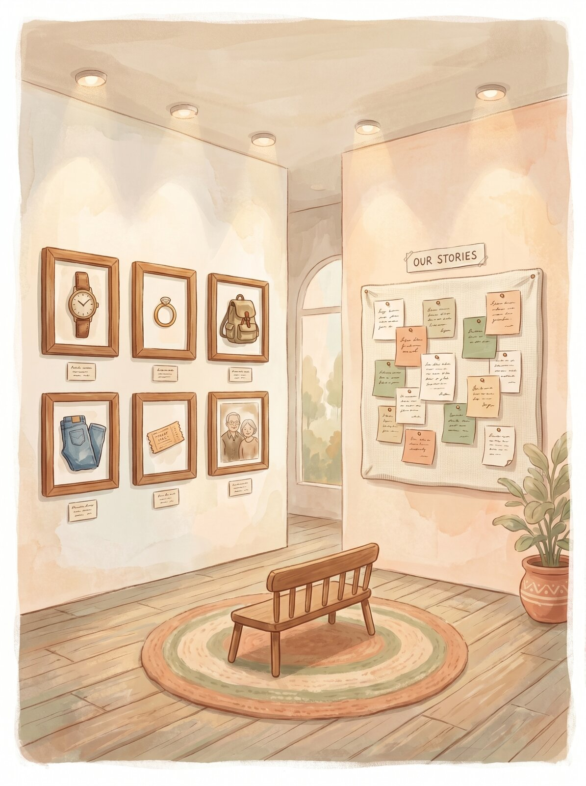

นิทรรศการของจริง — ของที่เคยอุ้มไว้ และคำที่เคยช่วยให้ใครคนหนึ่งเดินต่อ

บางเรื่องสัมผัสความสูญเสีย — เดินช้าๆ อ่านตามจังหวะของเธอเอง ไม่ต้องรีบ
ส่งรูป + เรื่องของเธอมาจัดแสดงที่ผนังนี้
เพื่อขอบคุณมัน — แล้วเดินต่อด้วยกัน
เลือกภาพที่ใจเรียก — กล้องจะพาเธอเดินเข้าไปดูใกล้ๆ